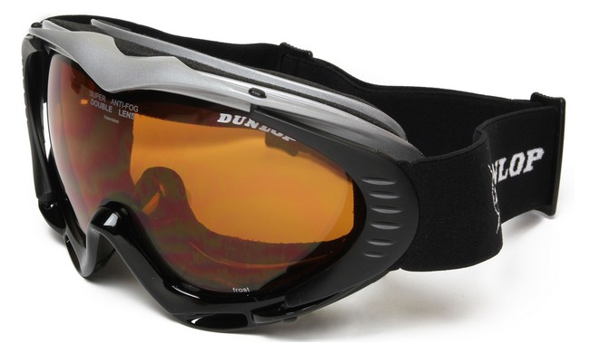

Всё о велосипедах
Все велосипедные шлемы, по сути, разделяются на типы по степени агрессивности езды велосипедиста, о которых мы поговорим ниже. Это необходимо учитывать при покупке велошлема, чтобы не переплачивать за тот уровень безопасности, который вам не нужен.
Этот тип шлемов отлично подходит для обычных велопрогулок, поездок по городу и простых кросс-кантрийных соревнований. Из-за своей легкости, комфортности и относительно демократичной цене получил широкое распространение среди райдеров при использовании на каждый велодень. За счет большого количества вентиляционных отверстий голова хорошо обдувается воздухом, что уменьшает ее перегрев, особенно в жаркие летние дни.
Шлем защищает только верхнюю часть головы. Височные и затылочная зоны не прикрыты корпусом. Но это не особо-то и нужно, если вы не катаетесь агрессивно. Зато такая конструкция экономит вес изделия и улучшает вентиляцию. Кстати вес в среднем составляет до 300 грамм. Если вы увидели шлем данного типа тяжелее, то лучше отказаться от его покупки. Чем он тяжелее, тем больше у вас будет уставать шея, что вызовет дискомфорт при езде на велосипеде.
Так как в нашей стране велошлемы не подлежат обязательной сертификации, то при выборе данного аксессуара для большей безопасности следует обращать внимание на американские и европейские сертификаты. Хорошо если на данном типе шлемов имеется что-нибудь из этого (или все вместе): ISO9000:2008, CE EN1078, CE EN1077 CPSC 16 CFR 1203, AS/NZS 2063:2008.
Этот велошлем является одноразовым. При достаточно сильном ударе его пенопластовая основа сминается и ломается, что исключает его повторное использование. Даже если вы не видите каких-либо повреждений после сильного удара, шлем все же лучше сменить. Это связано с тем, что в пенопластовом основании могут образовываться скрытые микротрещины, которые при повторном падении не позволят шлему выполнить свои защитные функции. Способствует этому и большое количество вентиляционных отверстий.
Крепиться кросс-кантрийный шлем на голову при помощи системы ремней и фиксаторов. На внутренней стороне очень часто можно обнаружить отстегивающуюся подкладку, которую легко снять после езды, и постирать. Практически все модели кросс-кантрийных шлемов имеют регулировку в некотором диапазоне по диаметру головы райдера. Осуществляется она при помощи специального поворотного замка или ползунка.
Данный тип шлема может комплектоваться регулируемым и нерегулируемыми козырьками и светоотражателями (катафотами), что является не обязательным, но повысит вашу заметность на дороге.
Шоссейные шлемы для велосипеда практически ничем не отличаются от кросс-кантрийных. Они имеют такую же конструкцию, прикрывают те же части головы райдера и имеют аналогичные сертификаты. Отличиями являются отсутствие солнцезащитного козырька для улучшения аэродинамики и увеличенные вентиляционные отверстия в корпусе.
Шлемы эндуро – это что-то среднее между кросс-кантрийными велошлемами и котелками (о которых речь пойдет ниже). Данный тип имеет схожие конструктивные особенности с кросс-кантрийными и, соответственно, шоссейными. У него также присутствуют развитые вентиляционные отверстия, за счет чего этот вид отлично подойдет для катания на каждый день. Отличает его от предыдущих моделей более развитая защита затылка и височных долей головы велосипедиста. Поэтому он неплохо подойдет райдерам, которые не просто используют велосипед как средство передвижение, но и иногда любят немного поэкстрималить (ключевое слово здесь – немного). Хотя данный шлем и лучше защищает затылок, но все же по безопасности он не дотягивает до котелков.
Шлемы эндуро, как и предшественники, одноразовые (после более или менее сильного удара шлем подлежит замене) и имеет те же сертификаты безопасности. Вес приблизительно такой же, около 300 грамм. Цена некоторых эндуро шлемов практически одинакова с кантрийными моделями, но в среднем все же немного выше.
Шлемы котелки называются так из-за своей формы, которая в некоторой мере действительно напоминает котелок. Предназначены для повышенной защиты головы райдера при выполнении различных трюков на велосипеде, поэтому являются необходимым атрибутом при катании на BMX велосипедах, и других трюковых байках в стиле дёрт, стрит и прочих видах экстремального катания. Плюсом ко всему, данный шлем также отлично подойдет для экстремальной езды на роликовых коньках, скейтах, при спусках по горным рекам на лодке и т.д. Данный шлем намного лучше защищает голову своего обладателя за счет практически полного отсутствия вентиляционных отверстий, что увеличивает его прочность, и развитой защите затылочной и височных зон головы райдера. Хотя отсутствие вентиляции очень плохо сказывается при использовании шлема в летний период. Из-за этого голова велосипедиста очень сильно потеет, что может привести к тепловому удару. Но как говорится, повышенная защита требует жертв. Поэтому шлемы котелки не подходят для повседневных поездок на обычных велосипедах, а применяются только при выполнении трюков.
Данные велошлемы не одноразовые и могут переносить множество сильных ударов. Но многие райдеры все же советуют менять его хотя бы раз в 3 года. Это связано в первую очередь с тем, что пенопластовое основание от сильных ударов сминается, что ухудшает его амортизационные свойства.
Конструкция принципиально не отличается. Котелки так же имеют пенопластовое основание, внешнее покрытие и систему ремней-фиксаторов. Отличием его от предыдущих видов является отсутствие регулировки под окружность головы райдера, что усложняет процедуру подбора велошлема.
Сертификаты, которые желательны при выборе шлема-котелка: CE EN1078, ANSI Z90-4, CPSC.
За счет практически полного отсутствия вентиляционных отверстий и увеличенного размера основания данные велошлемы немного набрали в весе, что составляет где-то около 500 грамм. Цена их так же больше чем у эндуро и кантрийных шлемов.
Данные велошлемы из родни мотоциклетных, и предназначены, в первую очередь, для скоростных спусков с горы – даунхиллу или фрирайда. Имеют круговую защиту головы, включая подбородок райдера. Могут комплектоваться щитками для глаз. Если последних нет, то следует докупить специальные защитные маски, которые перекрывают открытую часть лица и защищают глаза от попадания камней, пыли и т.д.
Это самый защищённый вид шлемов для велосипеда, но применять его даже для катания в стиле дёрт и стрит не целесообразно. Только даунхилл или фрирайд. Из-за вышеперечисленных особенностей значительно дороже всех предыдущих моделей.
Для большей прочности данные велошлема имеют не сильно развитую систему вентиляции, и очень часто карбоновый внешний слой, который повышает ударопрочность. Вес этих шлемов варьируется около 1,1 – 1,3 кг, что практически на 700 грамм больше чем у котелков.
Сертификаты: CPSC 1203, CE EN 1078:2002 + A1:2012 ASTM F1952-15, ASTM F2032-15, ASTM F2040-11.
Трековые шлемы для велосипеда применяются велогонщиками для достижения рекордов по скорости или на кольцевых велогонках, и призваны не только защищать голову райдера при падении, но и значительно улучшать аэродинамические характеристики велосипедиста (спорный вопрос, что приоритетней для этих шлемов). Из-за этого мы можем наблюдать подобные каплевидные формы. Абсолютно не подходят для обычных велопокатушек, поэтому заострять на них внимание, как нам кажется, не имеет особого смысла.
Детские велошлемы – практически полная уменьшенная копия кантрийных. Единственное, что немного меньше вентиляционных отверстий. Это сделано для увеличения срока службы детских шлемов, т.к. ребенок по статистике падает с велосипеда чаще, и если бы велошлем был весь в дырах, то менять поломанные пришлось бы очень часто. Они легче, а внутренние прокладки, как правило, мягче.